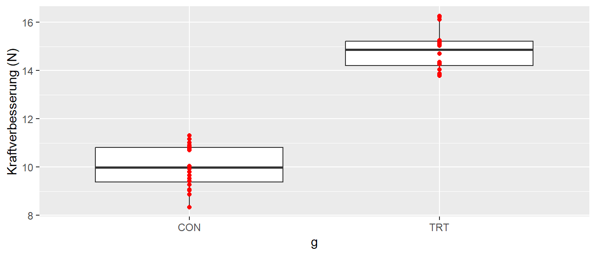

Statistik
Die erste Frage die sich im Umgang mit der Anwendung von Verfahren der Statistik stellt ist: Wofür benötigen wir Statistik überhaupt?
Beispielsweise wurden ein Datensatz gesammelt, bei dem zwei Gruppen miteinander verglichen werden, eine Treatmentgruppe (TRT) und eine Kontrollgruppe (CON). In beiden Gruppen wurden jeweils \(N_i = 20\) Personen untersucht. Es wurde das folgende Ergebnis erhalten (siehe Abbildung fig-why_stats).

Offensichtlich sind die Werte in der Treatmentgruppe deutlich höher als diejenigen in der Kontrollgruppe. Warum ist es nicht ausreichend das offensichtliche zu dokumentieren? Warum ist eine statistische Analyse der Daten notwendig?
Diese Fragestellung wird in dem folgenden Abschnitt untersucht. Gleichzeitig werden die notwendigen Werkzeuge entwickelt um die verschiendenen Schritte die einer statistische Analyse von Daten zugrundeliegenen zu verstehen und anwenden zu können.